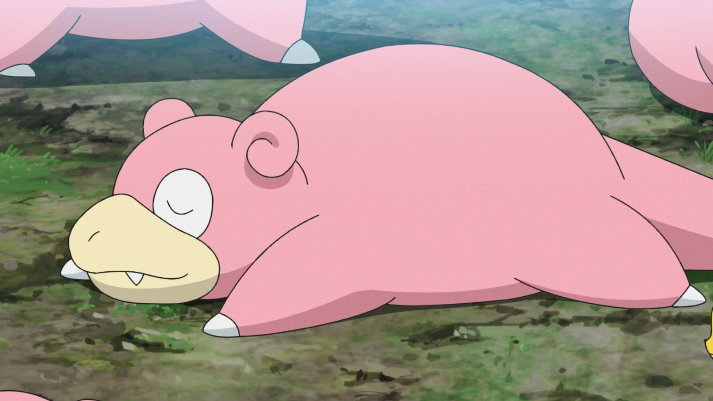

Git commands
Setup once
git config --global user.name "Your Name"# set usernamegit config --global user.email "you@email.com"# set user email
“What’s going on?” commands
git status# what branch you’re on, what files changedgit log# shows commit history (who, when, message, id)git log --oneline --graph --decorate --all# shows a clean “tree” of commits and branches
Save work (the core loop)
git add .# stage everything in this foldergit commit -m "message"# save a snapshot with a message
Branch commands
git branch# lists your local branches. the one with * is the current branch.git checkout/switch branch-name# moves you to another branchgit checkout/switch -c new-branch-name# create a new branch and switch to itgit branch -d branch-name# deletes only if Git thinks it’s safe (merged)
Remote commands (GitHub)
git remote -v# shows where your repo pushes/pulls from (the GitHub URL)git pull# brings the latest changes from GitHub into your current branch.git push# uploads your commits to GitHub for your current branchgit push -u origin branch-name# first push for a new branch. sets “upstream” so later you can just do git push and git pull.